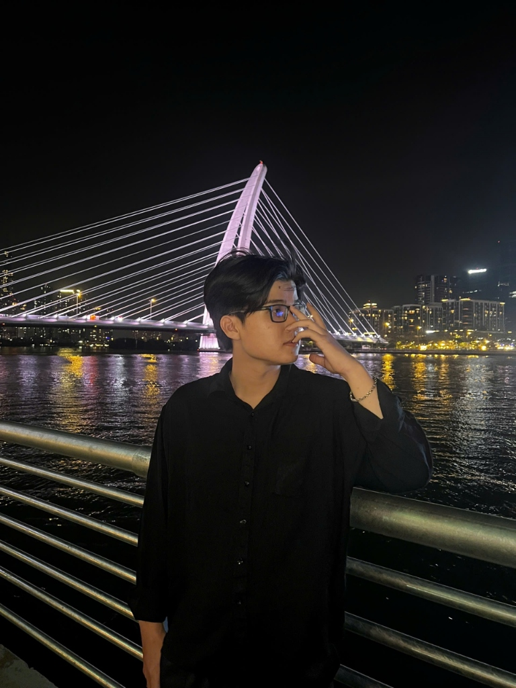

PORTFOLIO
LUU KHANG HUY
FRONTEND, FULLSTACK & DEVOPS ENGINEER
Frontend, Fullstack & DevOps Engineer with 1+ years of production product engineering (QUESTX). Specializing in Jamstack architecture with Next.js 15 App Router, interactive spatial 3D embedding (Spline 3D), author of 3 custom WordPress plugins (huy-product-wizard, vietqr-dynamic, user-address-book), multi-environment infrastructure (Production & Staging) on Linux VPS, automated CI/CD pipelines, and Cloudflare Zero Trust security (Zero Open Ports). Delivered 19 production systems for clients in France, the United States, Japan, and Vietnam.

SOFTWARE & DEVOPS #01
Luu Khang Huy · 19 BUILDS
"Clean code, automated CI/CD pipelines, and rock-solid security infrastructure — a system is only as powerful as its operational resilience and zero-downtime stability."
DEVELOPMENT & INFRASTRUCTURE
From Next.js/React frontend and custom OOP PHP backend, to CI/CD pipelines, Docker & Cloudflare Zero Trust.
DELIVERY LIFECYCLE
Clear milestones, predictable timelines, and transparent results at every phase.
DISCOVER
Listen deeply to business needs — zero technical obfuscation.
ARCHITECT
Craft UI/UX architecture and prototypes before coding.
BUILD & TEST
Rigorous cross-platform tests across mobile and desktop.
CI/CD DEPLOY
Automated CI/CD Docker rollout, live and stable 24/7.
6 COMPREHENSIVE TECHNICAL PILLARS
Frontend & 3D Spatial
Next.js (App Router), React, TypeScript, JavaScript (ES6+), Spline 3D (@splinetool/react-spline), Framer Motion, Apollo Client GraphQL, Headless CMS, Tailwind CSS, CSS Modules, HTML5/CSS3.
Fullstack & Backend
Node.js (Express), Python (Flask), PHP OOP, REST API, GraphQL, SQL Databases (MySQL), NoSQL (MongoDB), Redis Cache, DBeaver, Webhook Handlers.
WordPress & Custom Plugins
Author of 3 Custom Plugins (huy-product-wizard, vietqr-dynamic, user-address-book), Flatsome UX Builder, Elementor Pro, WooCommerce, ACF Pro, SCF, WPML, Polylang, Wordfence.
DevOps & Cloud Infra
Multi-Environment (Production & Test Server), Linux VPS (aaPanel), GitLab CI/CD, self-hosted GitLab Runner, GitHub Actions (SSH & Secrets), Cloudflare Zero Trust (Zero Open Ports), AWS S3 CDN Offload, Docker Compose, Android App Bundle (.aab via EAS CLI).
Web Performance & Vitals
Google PageSpeed Insights (Desktop > 90, Mobile > 75), Core Web Vitals (LCP, FID, CLS), LiteSpeed Cache, WP Rocket, Redis Object Cache, next-gen image compression (WebP/AVIF), On-page SEO.
Developer Tools & Systems
Git, Docker, Postman, VS Code, Figma, DBeaver, Nginx Reverse Proxy, Antigravity CLI/IDE, EAS CLI & Keystore Signing, Professional English Communication (Aptis ESOL B2).
PROFESSIONAL JOURNEY & TECHNICAL FOUNDATION
Corporate Frontend & DevOps engineering experience paired with formal academic CS credentials.
QUESTX CO., LTD.
Frontend & DevOps Engineer · Ho Chi Minh City
Spearheading modern Jamstack web application development, authoring specialized e-commerce custom plugins, and engineering multi-environment infrastructure across web applications, SaaS platforms, and global client deliverables.
Jamstack & 3D Frontend
Next.js App Router, React 19, CSS Modules, Apollo Client GraphQL integration, and interactive 3D spatial models via Spline 3D.
Author of 3 Custom Plugins
Architected and developed: huy-product-wizard, vietqr-dynamic (IPN Webhook gateway), and user-address-book (EU VAT compliance).
Multi-Environment & CI/CD
Engineered isolated Production & Test/Staging server topologies (aaPanel); automated 100% of workflows via GitLab Runner & GitHub Actions (SSH & Secrets).
Zero Trust & Mobile Build
Zero Open Ports security via Cloudflare Tunnels; offloaded media to AWS S3 CDN; automated Android App Bundle (.aab) packaging & Keystore signing via EAS CLI.
TON DUC THANG UNIVERSITY (TDTU)
Bachelor of Information Technology
Honors Capstone Project: Engineered HH_Movie, an adaptive video streaming platform with bandwidth-aware HLS FFmpeg transcoding, VNPAY HMAC-SHA512 webhook integration, CRM revenue analytics, and Docker Compose behind Nginx.
English Proficiency: Aptis ESOL B2
British CouncilProfessional Working Proficiency — Fluent technical communication and direct collaboration with international clients.
Global Partner Delivery Experience
France · USA · JapanDirectly engineered and shipped production systems for partners in France (Green Bridge, Nuage Sauvage), the United States (CMD Supply), and Japan (Hajime Studio).
19 PRODUCTION BUILDS & CASE STUDIES
Every project solves a real-world business challenge — from global e-commerce and AI automation to mobile apps and DevOps infrastructure.
MEASURABLE
PRODUCTION IMPACT
Empirical metrics reflecting international partner trust, sub-second performance, and 100% on-time project delivery.